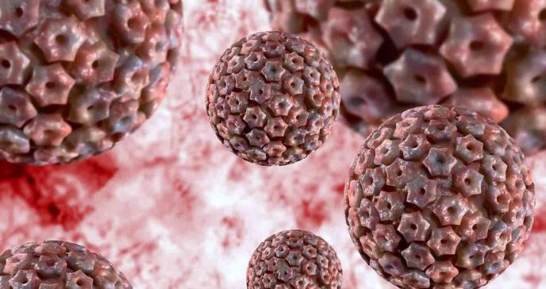

Un virus es una partícula de código genético, ADN o ARN, encapsulada en una vesícula de proteínas. Los virus no se pueden replicar por sí solos. Necesitan infectar células y usar los componentes de la célula huésped para hacer copias de sí mismos.
A menudo, el virus daña o mata a la célula huésped en el proceso de multiplicación. Los virus se han encontrado en todos los ecosistemas de la Tierra. Los científicos estiman que sobrepasan a las bacterias en razón de 1 a 10. Puesto que los virus no tienen la misma biología que las bacterias, no pueden ser combatidos con antibióticos. Tan sólo vacunas o medicaciones antivirales pueden eliminar o reducir la severidad de las enfermedades virales, incluyendo SIDA, Covid-19, sarampión y viruela.
Los virus son submicroscópicos, lo que significa que no se pueden ver en el microscopio. Lo que es interesante acerca de los virus es que tienen dos o tres componentes. Comenzando desde el interior, tienen un ácido nucleico, que puede ser ADN o ARN, y en ambos casos el ácido nucleico puede ser tanto de cadena simple como de cadena doble. A continuación, rodeando el ácido nucleico hay una cubierta proteica en forma cápside, o pequeñas unidades que se ensamblan en una cierta manera. Éso es lo que tienen todos los virus. Ahora, algunos virus también tienen una envoltura que obtienen cuando emergen de la célula. Los virus son muy interesantes en cuanto que sólo pueden sobrevivir dentro de una célula viva. Necesitan una célula viva para poder sobrevivir y replicarse. Los antibióticos no son eficaces contra los virus, pero sí lo son las vacunas, así
como algunos antivirales.
Tipos de virus
Existen dos formas de clasificación de los virus...
La primera forma contempla cuatro tipos, de acuerdo a la estructura que posean:
Helicoidal:
Tienen forma de hélice y una cavidad central en donde se encuentra su material genético (consistente en ARN o ADN).
Icosaédrica:
Virus medianamente esféricos y simétricos. Son los más abundantes de los que infectan a los animales.
De envoltura:
Virus que poseen una capa o envoltura de lípidos, que obtienen a partir de la membrana celular de sus células hospedadoras, y que es utilizada para inyectar el material genético dentro de la célula.
Complejos:
Existen virus con formas más complejas que combinan los tipos anteriores e incluso pueden tener componentes adicionales, como colas de proteínas para desplazarse. Las mismas, en muchos casos, sirven para inyectar a la célula el material genético del virus.
La segunda forma de clasificación se basa en el tipo de material genético que contienen:
Virus ADN:
Aquellos que poseen en su interior una molécula de ácido desoxirribonucleico, ya sea de cadena simple o doble. Necesitan introducir dicho ADN al núcleo de la célula para poder iniciar su replicación.
Virus ARN:
Aquellos que tienen ácido ribonucleico y pueden replicarse directamente en el citoplasma celular, sin necesidad de alcanzar el núcleo de la célula invadida.
Ejemplos de virus
Algunos ejemplos de virus conocidos son...
Enterovirus humano tipo 72 (Hepatitis A):
Pertenece a la familia Picornaviridae, género Hepatovirus. Se trata de un virus con ARN lineal y monocatenario. Cada partícula tiene un diámetro de 27 a 32 nanómetros (nm), presenta una cápside icosaédrica y carece de envuelta. Se transmite por las eces fecales.
Virus del papiloma humano (VPH):
Se trata de una familia de virus sumamente comunes en el hombre, algunos de transmisión sexual (VPH) y otros por el tacto, que suelen causar verrugas y ser medianamente inofensivos, excepto ciertas cepas que han sido vinculadas con el cáncer.
Virus herpes simplex (VHS):
Un virus humano sumamente común que genera lesiones cutáneas (conocidas como herpes) y del que existen dos variantes: una genital y otra que prefiere la lengua, boca, ojos y faringe.

Virus de inmunodeficiencia humana (VIH):
es un virus que ataca el sistema inmunitario del cuerpo. Si no se trata, puede causar SIDA (síndrome de inmunodeficiencia adquirida). No hay en la actualidad una cura eficaz. Una vez que se contrae el VIH, se lo tiene de por vida.